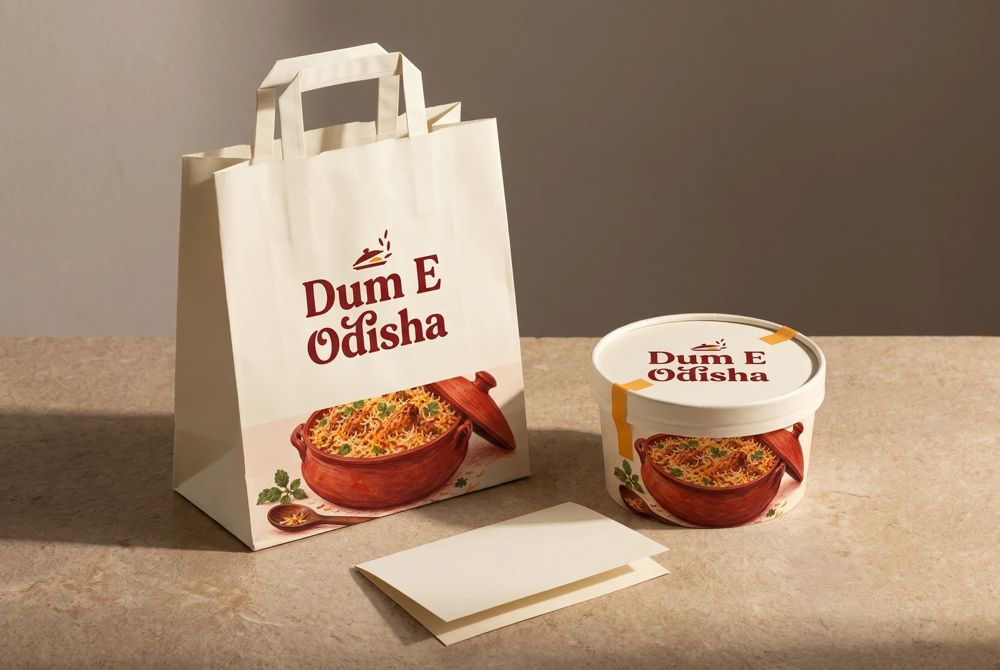
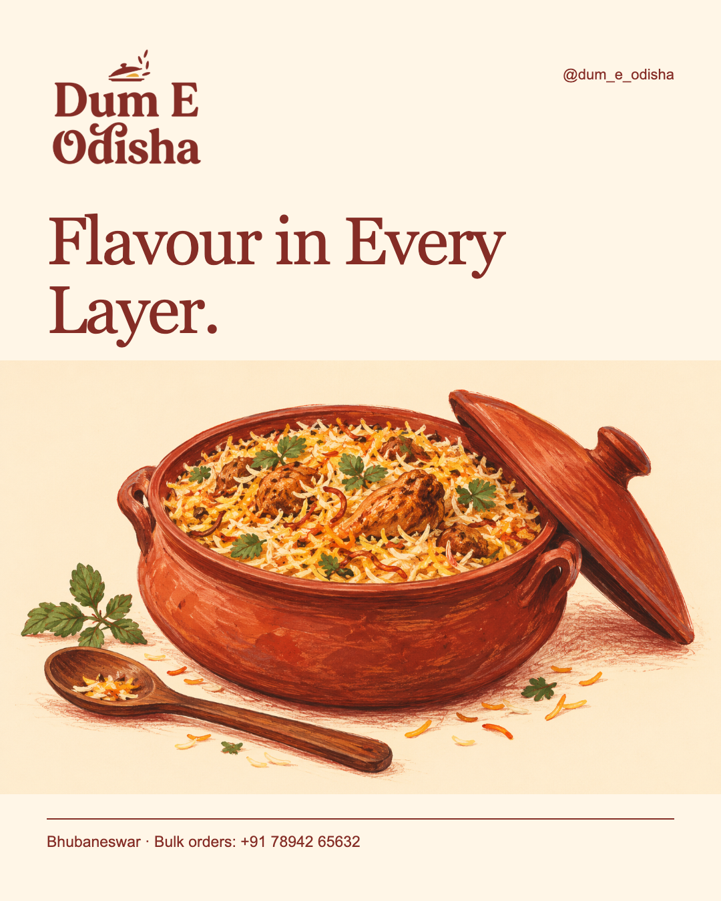
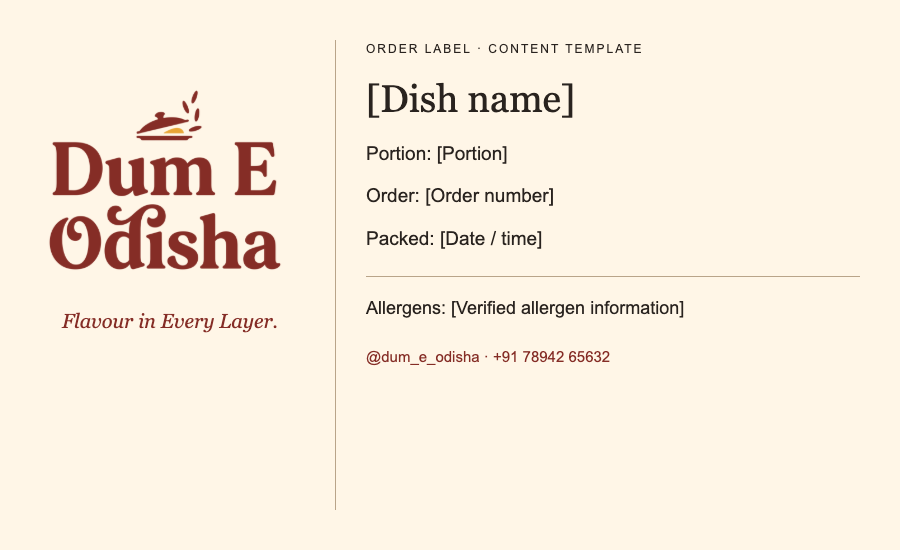

Image only / no lettering
Image only / no letteringThe Handi Host
View the idea & download artwork ↗
The lifted lid · Identity study 02
A warm welcome, before the first spoonful.
Explore the identity ↓
Latest / Image-only & mixed-script logos
A lettering-free Handi Host, a Hindi beginning and an Odia ending. Open each idea to compare initial, middle and final-word script placements.
Latest / Your original Dum Club idea, refined
Two focused refinements preserve the rounded name and lifted lid. Explore a rice-kernel counter, a real golden-ratio layout study, one-ink proofs and a coordinated brand world.
Latest / Food-brand explorations / Round 02
A friendly rice host, a bold wordmark, a compact D/bowl symbol and an illustrated editorial identity. These original directions study the structure of your latest reference screenshots.
New / The idea collection
Three original lettering directions study the symbol and script relationships in your references. Choose an idea to see the design applied, or compare Odia and Hindi fonts in the type lab.
View the logo, wall, banner, TV display and poster ↗
View the logo, wall, banner, TV display and poster ↗
View the logo, wall, banner, TV display and poster ↗
New directions are exploratory. Odia/Hindi text and generated lettering need native-reader review before adoption.
01 / The signature
A lifted lid, the pause before a meal, and lettering with a little personality. The full name stays unmistakable: Dum E Odisha. A generous gap gives the E its own place; Odisha holds equal importance.
01 — Chilli & saffron
02 — A single ink

03 — After dark
The logo files are transparent raster PNGs. Keep the complete lockup intact. Use the lid symbol for compact spaces and put the full name nearby. Vector reconstruction and a physical print proof are the next production steps.
Review 01 / geometric lettering
Review 02 / warmer, sign-painted rhythm
02 / A familiar kind of warmth
Chilli carries the name. Cream gives it breathing room. Saffron adds a small spark. Leaf belongs to the illustrations; dark ink keeps the practical details easy to read.
Click a hex value to copy. Use chilli or dark ink for text on cream; reserve saffron-on-cream for decoration.
03 / Drawn with appetite
Loose pencil edges. Broad washes of colour. Rice grains with their own rhythm. The illustration language has the tactile feel of a food journal, with enough restraint to sit beside a clear name.
Created with image-generation tools, art-directed toward a hand-drawn finish. These are illustrative scenes, not photographs of the brand’s served food.
Illustration direction & provenance ↗04 / Out in the world
The logo gets a quiet cream panel. The illustration wraps the lower edge. A small saffron seal finishes the family. One consistent visual language across a carrier, tub and card.

05 / Ready to work with
Editable templates keep the expressive artwork and useful information in balance. Open a template, change the copy, and use its print controls to save a proof. Fields awaiting real business data remain clearly marked.

An illustration-led portrait layout, with live editable heading and caption.
Open editable social template ↗
An order label with explicit fields for dish, portion, allergens and packing details.
Open editable order label ↗06 / Words & rhythm
Keep the voice warm, direct and specific. The name comes first, then the dish and the information needed to choose it. Save storytelling for the spaces that can carry it.
Logo lettering is generated artwork, not a typeface to install. The existing line “Flavour in Every Layer.” is retained. Menu, recipe and service claims require evidence.
“Lift the lid.
Make room for flavour.”Draft campaign copy / an invitation, without a fabricated origin story.
“Dish. Portion. Allergens.
All easy to find.”Operational copy / fill with verified information before use.
07 / The facts behind the work
The owner-linked Instagram bio lists Bhubaneswar, catering, bulk orders and a phone number. The same phone appears on Zomato, linking the public account to the researched restaurant listings. Sources and dates stay with the data.
Matched platform address: Shop 20 A, Soubhagya Nagar, Baramunda, Bhubaneswar. Platform menus mention chicken, egg and seekh-kebab biryani, with rice and accompaniments. These are sourced observations; current availability, portions and prices still need confirmation. Instagram source ↗
08 / Keep it together
Artwork, templates, research and source files have their own homes. Start here for the current proposal; the first review and earlier explorations remain accessible in the project archive.